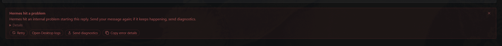
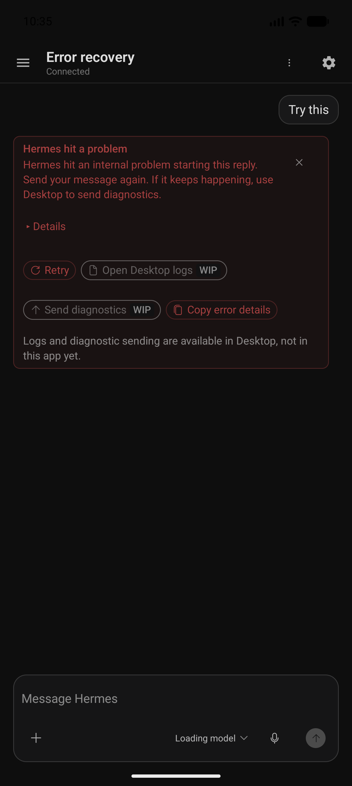
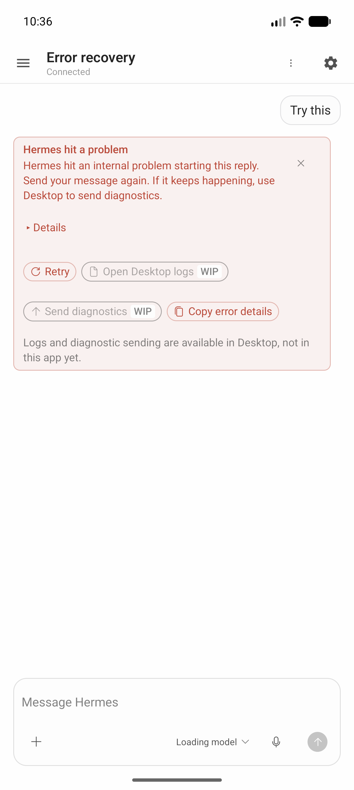

Concern: these images predate functional Gateway logs and diagnostics and are not final-head visual evidence. The current implementation has consent-gated View Gateway logs and Send diagnostics, not the disabled actions pictured below. Provider switching remains disabled WIP. No replacement screenshots have been fabricated. See the parity ledger for current behavior and pending visual coverage.
Android emulator captures came from an uncommitted debug build based on d628e28e32aca91b009338b4e3645e58b5cbf7e8. The exact capture build digest was not recorded. They show a synthetic failed-turn fixture, not a live failed Gateway request. Subsequent test counts and APK digests are intentionally not attached to these older pixels; exact-head checks belong in the PR receipts.
The Desktop image is the user-supplied visual requirement. Its revision is unknown; it is not a pinned renderer capture. The recovery contract references 437116f9497c80d242ce034ff7f5d81dc277a337, which predates the requested heading and Details disclosure.
Desktop reference supplied by the user (revision unknown)

Historical Android — collapsed, before functional support actions

Historical dark fixture; obsolete disabled support actions.

Historical light fixture; obsolete disabled support actions.
Seeded QA PNG read by the production MediaStore query and thumbnail loader. Selection opened its content URI. The debug probe filters displayed rows to QA names for privacy. Not a production composer capture or evidence of a Gateway upload; recent-images parity remains #277.
Verdict and limits
The historical captures show heading, disclosure, dismissal, outlined action treatment and wrapping touch targets. They do not prove the current dialogs or all conditional states.
Current logs and diagnostics are exercised with fake transports and synthetic data in JVM/Compose tests. No private Gateway logs were read and no diagnostics were uploaded during verification.
Retry protocol, startup-failure guards, image replay, resume metadata and redaction have regression tests; a live authenticated retry was not exercised.
Not full pinned-source parity. Current dark/light dialog captures, conditional OAuth and ownership recovery, and exact glyph/copy comparison remain follow-up work recorded in the ledger.